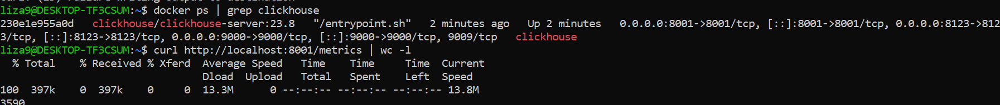
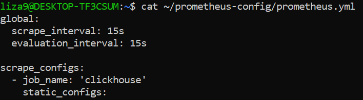
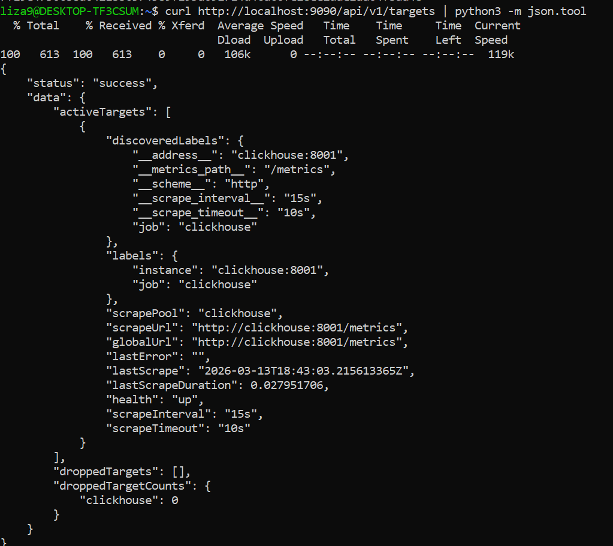
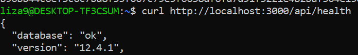
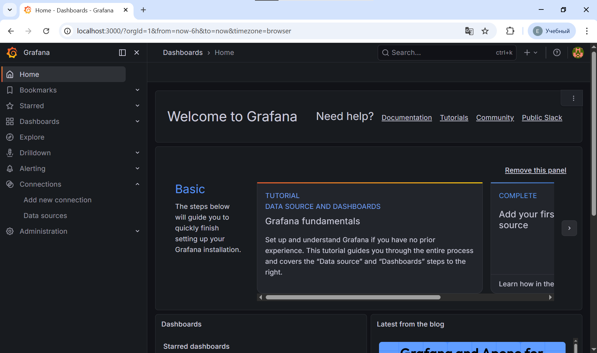
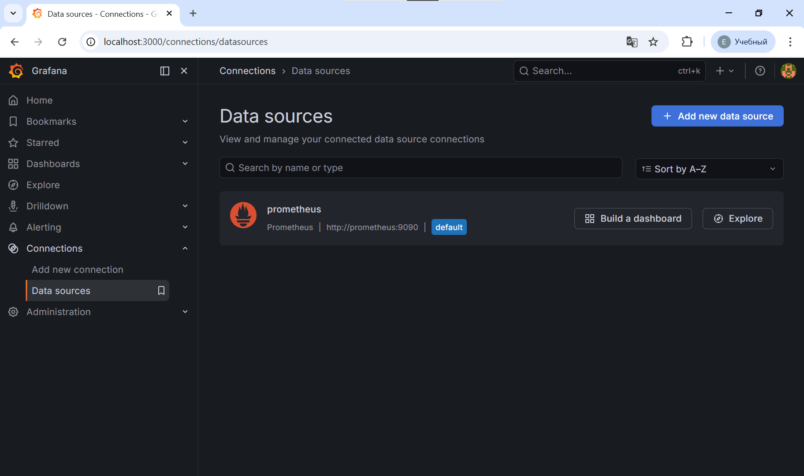
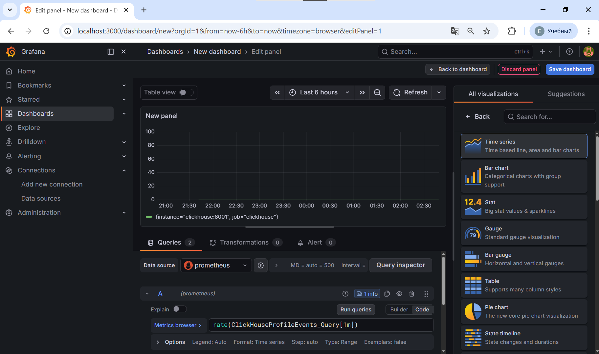
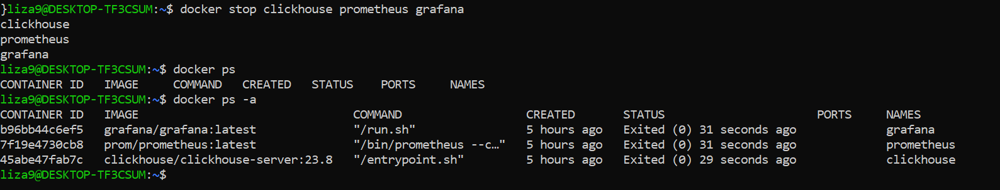

Внешние системы мониторинга — это инструменты, которые работают отдельно от ClickHouse, но подключаются к нему для сбора данных о его работе. Они не входят в состав СУБД, а «наблюдают за ней со стороны».
💡 Важно: Prometheus и Grafana понимают все эти типы, а Zabbix работает преимущественно с Gauge и Counter.
Что это: Система сбора и хранения метрик с открытым исходным кодом. Работает по модели pull — сама периодически «опрашивает» ClickHouse по HTTP.
Как подключается к ClickHouse:
ClickHouse имеет встроенный эндпоинт :8001/metrics, который отдаёт метрики в формате Prometheus
Никаких дополнительных агентов не требуется
Плюсы для ClickHouse:
✅ Нативная поддержка — метрики «из коробки»
✅ Мощный язык запросов PromQL для анализа
✅ Гибкие правила алертинга через Alertmanager
Минусы:
❌ Хранит данные локально — для долгосрочного хранения нужна связка с Thanos/VictoriaMetrics
❌ Требует отдельной настройки для кластеров
Что это: Платформа визуализации. Сама не собирает метрики, а подключается к источникам данных (Prometheus, ClickHouse, Zabbix) и строит красивые дашборды.
Как работает с ClickHouse:
Устанавливается официальный плагин ClickHouse Data Source for Grafana
Настраивается подключение к серверу ClickHouse (через нативный протокол или HTTP)
Создаются панели с запросами к системным таблицам или метрикам
Плюсы:
✅ Огромная библиотека готовых дашбордов (Grafana.com)
✅ Поддержка переменных для динамической фильтрации (по хосту, базе, таблице)
✅ Возможность строить графики напрямую по данным из ClickHouse
Минусы:
❌ Не хранит данные — только визуализирует
❌ Требует источник метрик (Prometheus, сам ClickHouse и т.д.)
Что это: Универсальная система мониторинга корпоративного уровня. Работает по модели push (агент отправляет данные) или pull (сервер запрашивает).
Как подключается к ClickHouse:
Используется официальный шаблон «ClickHouse by HTTP»
Шаблон запрашивает метрики через HTTP-интерфейс ClickHouse (:8123)
Поддерживает автообнаружение (LLD): сам находит новые таблицы, реплики, базы
Плюсы:
✅ Готовые триггеры и алерты «из коробки»
✅ Интеграция с системами уведомлений (Telegram, Email, Slack)
✅ Долгосрочное хранение истории и трендов
Минусы:
❌ Более сложная начальная настройка по сравнению с Prometheus+Grafana
❌ Меньше готовых дашбордов именно для ClickHouse
Совет: Если на каком-то этапе что-то идет не так - не сдавайся! Говорю как человек, который 4 часа боролся для того, чтобы все заработало) Не перенебрегай шагом установки в Docker, это потенциально сэкономит 3 из них.
# В терминале WSL:
sudo service clickhouse-server status
bash
# Обновляем пакеты
sudo apt update
# Устанавливаем Docker
sudo apt install docker.io -y
# Запускаем Docker
sudo systemctl start docker
sudo systemctl enable docker
# Добавляем пользователя в группу docker (чтобы не нужен был sudo)
sudo usermod -aG docker $USER
# Применяем изменения (или перезайди в терминал)
newgrp docker
bash
# Создаём папку для конфига
mkdir -p ~/clickhouse-prometheus
# Создаём конфиг с Prometheus endpoint
cat > ~/clickhouse-prometheus/prometheus.xml << 'EOF'
EOF
# Проверяем, что создалось
cat ~/clickhouse-prometheus/prometheus.xml
bash
# Создаём Docker сеть
docker network create monitoring
# Запускаем ClickHouse
docker run -d --name clickhouse \
--network monitoring \
-p 8123:8123 \
-p 9000:9000 \
-p 8001:8001 \
-v ~/clickhouse-prometheus/prometheus.xml:/etc/clickhouse-server/config.d/prometheus.xml:ro \
-e CLICKHOUSE_USER=default \
-e CLICKHOUSE_PASSWORD=test123 \
clickhouse/clickhouse-server:23.8
# Ждём запуска
sleep 10
# Проверяем, что работает
docker ps | grep clickhouse
# Проверяем метрики
curl http://localhost:8001/metrics | head -30
✅ Если видишь метрики с # HELP и # TYPE — ClickHouse работает!

bash
# Создаём папку
mkdir -p ~/prometheus-config
# Создаём конфиг
cat > ~/prometheus-config/prometheus.yml << 'EOF'
global:
scrape_interval: 15s
evaluation_interval: 15s
scrape_configs:
- job_name: 'clickhouse'
static_configs:
- targets: ['clickhouse:8001']
EOF
# Проверяем
cat ~/prometheus-config/prometheus.yml

bash
docker run -d --name prometheus \
--network monitoring \
-p 9090:9090 \
-v ~/prometheus-config/prometheus.yml:/etc/prometheus/prometheus.yml:ro \
prom/prometheus:latest
# Ждём запуска
sleep 5
# Проверяем статус
curl http://localhost:9090/api/v1/targets | python3 -m json.tool
✅ Если видишь "health": "up" — Prometheus собирает метрики!

bash
docker run -d --name grafana \
--network monitoring \
-p 3000:3000 \
grafana/grafana:latest
# Проверяем
sleep 5
docker ps | grep grafana

Перейди: http://localhost:3000
Логин: admin
Пароль: admin
Поменяй пароль (предложат при первом входе)

В Grafana: Connections → Data sources → Add data source
Выбери: Prometheus
В поле URL введи: http://prometheus:9090
Нажми: Save & test
Должно появиться: "Data source is working" ✅

Dashboards → New dashboard → Add visualization
Выбери Prometheus
Введи запросы:
promql
# Количество всех запросов
ClickHouseProfileEvents_Query
# SELECT запросы
ClickHouseProfileEvents_SelectQuery
# INSERT запросы
ClickHouseProfileEvents_InsertQuery
# Использованная память
ClickHouseProfileEvents_MemoryTracking
Выбери визуализацию: Time series
Нажми: Save dashboard
Имя: "ClickHouse Monitoring"

bash
# Все контейнеры
docker ps
# Логи ClickHouse
docker logs clickhouse --tail 10
# Логи Prometheus
docker logs prometheus --tail 10
# Метрики ClickHouse
curl http://localhost:8001/metrics | wc -l
# Статус Prometheus
curl http://localhost:9090/api/v1/targets | python3 -m json.tool | grep health
Не забудь остановить все!)
bash
# Остановить все контейнеры
docker stop clickhouse prometheus grafana
# Проверить, что остановились
docker ps -a
# Позже запустить заново
docker start clickhouse prometheus grafana

promql
# Количество запросов в секунду
rate(ClickHouseProfileEvents_Query[1m])
# SELECT запросы
rate(ClickHouseProfileEvents_SelectQuery[1m])
# INSERT запросы
rate(ClickHouseProfileEvents_InsertQuery[1m])
# Использованная память
ClickHouseProfileEvents_MemoryTracking
# Асинхронные вставки
ClickHouseProfileEvents_AsyncInsertQuery
# Количество строк в SELECT
ClickHouseProfileEvents_SelectedRows
# Время выполнения запросов
ClickHouseProfileEvents_QueryTimeMicroseconds
✅ ClickHouse — база данных
✅ Prometheus — сбор метрик
✅ Grafana — визуализация
✅ Рабочий дашборд с метриками
| Тип метрики | Что измеряет | Пример для ClickHouse |
| Счётчик (Counter) | Накопительное значение, которое только растёт | Query — общее количество выполненных запросов с момента запуска |
| Га́йдж (Gauge) | Мгновенное значение, которое может расти и падать | MemoryTracking — сколько памяти используется прямо сейчас |
| Гистограмма (Histogram) | Распределение значений по диапазонам | Время выполнения запросов: сколько запросов выполнилось за 0-100 мс, 100-500 мс и т.д. |
| Сводка (Summary) | Агрегированные статистики: сумма, среднее, процентили | QueryTimeMicroseconds — среднее и 95-й процентиль времени выполнения |
| Метрика | Где смотреть | Что означает простыми словами | Нормальное значение | 🚨 Когда бить тревогу | Что делать |
| Query, SelectQuery, InsertQuery | system.events или Prometheus | Сколько всего запросов выполнено / SELECT / INSERT в секунду | Зависит от нагрузки приложения | Резкий рост или падение в 2-3 раза без причины | Проверить логи запросов, найти «тяжёлые» запросы через system.query_log |
| MemoryTracking | system.metrics | Сколько оперативной памяти ClickHouse использует прямо сейчас | < 80% от доступной RAM | > 90% — риск аварийной остановки (OOM-kill) | Найти запросы, потребляющие много памяти: SELECT * FROM system.processes ORDER BY memory_usage DESC |
| DelayedInserts | system.metrics | Сколько INSERT-запросов ClickHouse намеренно притормаживает | 0 (ноль) | > 0 в течение более 5 минут | 1) Увеличить размер пакетной вставки 2) Проверить parts_to_delay_insert 3) Пересмотреть партиционирование |
| MaxPartCountForPartition | Агрегация по system.parts | Максимальное количество файлов-«частей» в одной партиции таблицы | < 150 | > 300 — SELECT начнут тормозить | 1) Оптимизировать частоту вставок 2) Проверить настройки merge_tree 3) Запустить OPTIMIZE TABLE ... FINAL (осторожно!) |
| ReplicasMaxAbsoluteDelay | system.metrics | Насколько сильно реплика отстаёт от других в кластере (в секундах) | < 60 сек | > 600 сек (10 минут) — данные могут быть неполными | 1) Проверить сеть между нодами 2) Проверить нагрузку на диск 3) Проверить статус ZooKeeper |
| ZooKeeperSession | system.metrics | Сколько активных подключений к ZooKeeper у этой ноды | 1 (ровно одна сессия) | ≠ 1 или значение часто меняется | 1) Проверить логи на ошибки подключения 2) Настроить таймауты zookeeper_*_timeout_ms |
| NetworkErrors | system.events | Сколько ошибок сети произошло при обмене данными | 0 | Любой рост > 0 | 1) Проверить сеть (ping, netstat) 2) Проверить фаерволы и балансировщики |
| MergedUncompressedBytes | system.metrics | Сколько данных обрабатывают фоновые процессы слияния (merge) | > 0 (значит, merge работает) | 0 при высоком DelayedInserts — слияние «зависло» | 1) Проверить system.merges 2) Увеличить number_of_free_entries_in_pool_to_execute_mutation |
| TCPConnection, HTTPConnection | system.metrics | Сколько клиентов подключено к нативному / HTTP-интерфейсу | Зависит от архитектуры | Резкий рост до лимита max_connections | 1) Проверить пул соединений в приложении 2) Настроить max_connections в конфиге |
| ReplicaIsReadOnly | system.metrics | Перешла ли реплика в режим «только чтение» из-за ошибок | 0 (ноль) | = 1 — реплика не принимает запись | 1) Проверить логи на ошибки репликации 2) Проверить место на диске 3) Проверить ZooKeeper |